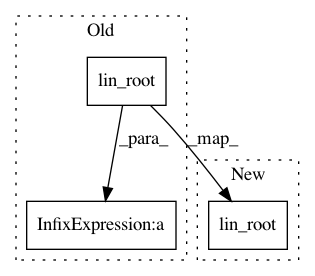

e7a0a2609ae97a16700c758fab13cc8dd5463b3d,torch_geometric/nn/conv/graph_conv.py,GraphConv,forward,#GraphConv#Any#Any#Any#,44
Before Change
edge_weight: Optional[torch.Tensor] = None):
out = self.propagate(edge_index, x=self.lin_rel(x), norm=edge_weight)
return out + self.lin_root(x)
def message(self, x_j, norm: Optional[torch.Tensor]):
return norm.view(-1, 1) * x_j if norm is not None else x_j
After Change
edge_weight: Optional[torch.Tensor] = None):
out = self.propagate(edge_index, x=self.lin_rel(x), norm=edge_weight)
out += self.lin_root(x)
return out
def message(self, x_j, norm: Optional[torch.Tensor]):
return norm.view(-1, 1) * x_j if norm is not None else x_j
In pattern: SUPERPATTERN
Frequency: 3
Non-data size: 3
Instances
Project Name: rusty1s/pytorch_geometric
Commit Name: e7a0a2609ae97a16700c758fab13cc8dd5463b3d
Time: 2020-06-08
Author: matthias.fey@tu-dortmund.de
File Name: torch_geometric/nn/conv/graph_conv.py
Class Name: GraphConv
Method Name: forward
Project Name: rusty1s/pytorch_geometric
Commit Name: e7a0a2609ae97a16700c758fab13cc8dd5463b3d
Time: 2020-06-08
Author: matthias.fey@tu-dortmund.de
File Name: torch_geometric/nn/conv/sage_conv.py
Class Name: SAGEConv
Method Name: forward
Project Name: rusty1s/pytorch_geometric
Commit Name: 6f3f79792891b35abf0f9281a226dcd2e0a57eb3
Time: 2021-02-08
Author: matthias.fey@tu-dortmund.de
File Name: torch_geometric/nn/dense/dense_graph_conv.py
Class Name: DenseGraphConv
Method Name: forward